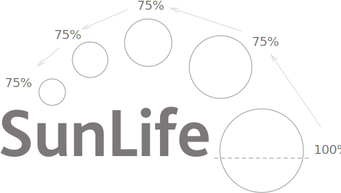

We use icons as visual helpers to support the meaning in our content or reinforce calls to actions. Not every item warrants an icon. Overuse diminishes their impact and creates visual noise so use icons sparingly.
 Plus symbols reinforce add actions
Plus symbols reinforce add actions
Anatomy of an icon
We’ve derived the proportions of our icons from our logo, where the sunshine circles grow by 75% each time. Icons must be designed using this circular grid to maintain consistency between them.

The icon grid
Icon proportions
The relationship between icon sizes and the symbols they contain has been derived from the proportions of our logo and icon grid.
Standard icons
We use our Smoke supporting colour for the background of standard icons. The symbols they contain are white.
Sky panels
We use our Midnight supporting colour for the background of our standard icons. The symbols they contain are Sky.
Colour variations
Ketchup icons indicate when a person should proceed with caution, for example closing a window or deleting an entry. Sky icons indicate that an item is interactive, for example opening an accordion.
Responsive icon sizes
Icons use the Scalable Vector Graphics (SVG) format and may be scaled to any size with no loss of fidelity. We’ve chosen three sizes; 22px for mobile, 33px for medium-size screens and 44px for large screens.Use CSS to apply the sizes.
Ratings
Design notes
HTML
<div class="rating" title="Five stars">
<img src="icon-star-smoke.svg" alt="">
<img src="icon-star-smoke.svg" alt="">
<img src="icon-star-smoke.svg" alt="">
<img src="icon-star-smoke.svg" alt="">
<img src="icon-star-smoke.svg" alt="">
</div>
CSS/Sass
Modifier classes
.rating

Our icons are based on the Streamline icon set by Webalys. Designers and developers should purchase their own license. We recommend the Designer + Developer Ultimate Pack that contains 5000 icons.